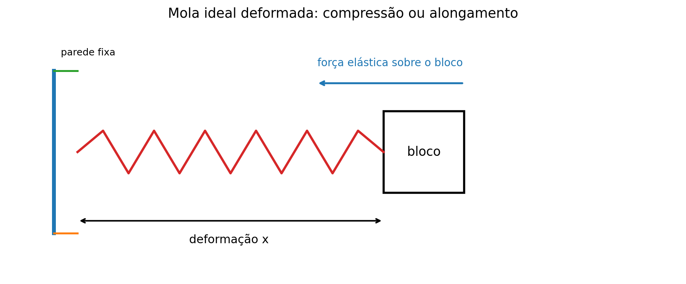
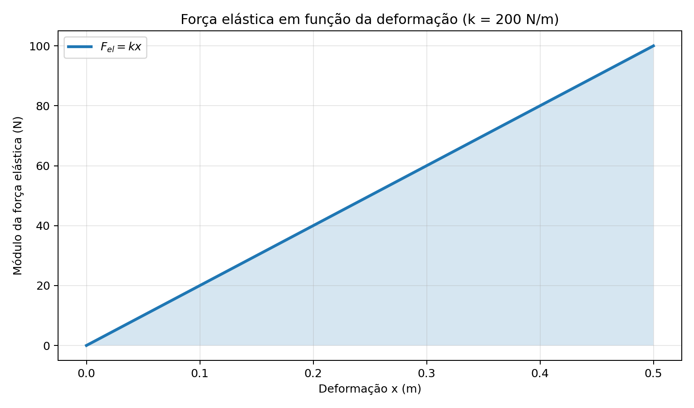
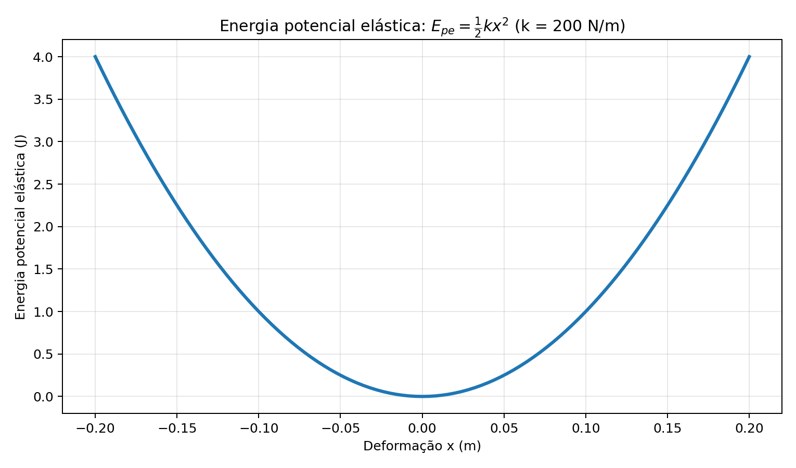

A energia potencial elástica é a energia associada à deformação de um corpo elástico. Para uma mola ideal que obedece à lei de Hooke, medida a partir de seu comprimento natural, ela é dada por $E_{pe}=\dfrac{1}{2}kx^2$, em que $k$ é a constante elástica e $x$ é a deformação (alongamento ou compressão).
A energia potencial elástica é sempre não negativa nesse modelo. Ela depende do quadrado da deformação: dobrar $x$ quadruplica a energia. O trabalho da força elástica é $W_{el}=-\Delta E_{pe}$.
📖 Energia potencial elástica
1. Deformação e armazenamento de energia
Uma mola, um arco ou uma faixa elástica podem armazenar energia quando são deformados. Ao comprimir ou alongar uma mola, é necessário realizar trabalho contra a força elástica. Quando a mola é liberada, ela pode transferir energia para outros corpos, produzindo movimento.
Chamamos de energia potencial elástica a energia associada à configuração deformada do sistema elástico. No estudo de uma mola ideal, a deformação $x$ é a diferença entre o comprimento atual e o comprimento natural da mola. Pode-se representar a compressão ou o alongamento pelo módulo $|x|$.

Figura 1: Mola ideal deformada por compressão ou alongamento. A deformação é medida em relação ao comprimento natural da mola; o desenho é esquemático.
2. Lei de Hooke e constante elástica
Para pequenas deformações dentro do limite elástico, muitos materiais obedecem aproximadamente à lei de Hooke. Para uma mola ideal, a força elástica é proporcional à deformação e tem sentido oposto a ela:
$$\vec F_{el}=-k\vec x$$
Em uma dimensão, usando sinais, $F_{el}=-kx$. O módulo é $F_{el}=k|x|$. A constante elástica $k$ mede a rigidez da mola: quanto maior $k$, maior a força necessária para produzir a mesma deformação. No SI, $k$ é medido em newtons por metro (N/m), e $x$ em metros (m).
A lei de Hooke é um modelo válido enquanto a deformação permanecer na região elástica aproximadamente linear. Se a mola for deformada além do limite elástico, ela pode não retornar ao comprimento original e a relação linear deixa de ser válida.
3. Expressão da energia potencial elástica
O trabalho necessário para deformar gradualmente uma mola ideal desde a posição natural até uma deformação de módulo $x$ fica armazenado como energia potencial elástica:
$$E_{pe}=\frac{1}{2}kx^2$$
Em que $E_{pe}$ é a energia potencial elástica, em joules (J); $k$ é a constante elástica, em N/m; e $x$ é a deformação em relação ao comprimento natural, em metros (m). A unidade é coerente, pois $(\text{N/m})\cdot\text{m}^2=\text{N}\cdot\text{m}=\text{J}$.
Como a deformação aparece ao quadrado, tanto a compressão quanto o alongamento armazenam energia. No modelo ideal, $E_{pe}=0$ quando a mola está em seu comprimento natural e $E_{pe}>0$ quando está deformada.
📖 Trabalho, gráficos e transformações
4. Relação entre trabalho e energia potencial elástica
A força elástica é conservativa. Assim, o trabalho realizado por ela entre duas posições é igual ao oposto da variação da energia potencial elástica:
$$W_{el}=-\Delta E_{pe}=E_{pe,i}-E_{pe,f}$$
Quando a mola retorna em direção ao comprimento natural, sua energia potencial diminui e a força elástica realiza trabalho positivo. Quando a mola é deformada ainda mais, a energia potencial aumenta e o trabalho da força elástica é negativo. O trabalho externo necessário para deformar lentamente a mola, sem variação de energia cinética, é igual a $+\Delta E_{pe}$.
5. Gráfico da força elástica em função da deformação
O módulo da força elástica é proporcional ao módulo da deformação. Em um gráfico de $F_{el}$ por $x$ (considerando os módulos), obtemos uma reta que passa pela origem. A área sob a reta, entre $0$ e $x$, representa o trabalho necessário para deformar a mola, que corresponde à energia potencial elástica armazenada.

Figura 2: Gráfico do módulo da força elástica em função da deformação para uma mola de constante elástica $k=200\,\text{N/m}$. A área triangular sob a reta representa $E_{pe}=kx^2/2$.
6. Gráfico da energia potencial elástica em função da deformação
Como $E_{pe}=\dfrac{1}{2}kx^2$, o gráfico de energia potencial em função da deformação é uma parábola com concavidade voltada para cima. O valor da energia é o mesmo para deformações de mesmo módulo, uma vez que $x$ está ao quadrado.

Figura 3: Energia potencial elástica em função da deformação para $k=200\,\text{N/m}$. Alongamentos e compressões de mesmo módulo armazenam a mesma energia.
7. Aplicações e conversão de energia
Arco e flecha: o trabalho realizado ao tensionar o arco fica armazenado como energia potencial elástica e pode ser transferido à flecha.
Brinquedos de mola: uma mola comprimida pode impulsionar um carrinho ou outro objeto, convertendo energia potencial elástica em energia cinética.
Cama elástica: a lona e as molas deformam-se durante o salto e armazenam energia que participa do movimento de retorno.
Sistemas de suspensão: molas deformam-se ao passar por irregularidades e armazenam e devolvem energia; amortecedores dissipam parte da energia mecânica, reduzindo as oscilações.
8. Limites do modelo e erros comuns
A expressão $E_{pe}=\dfrac{1}{2}kx^2$ é aplicada a uma mola ideal que obedece à lei de Hooke. Não se deve confundir a deformação $x$ com o comprimento total da mola. Também não se deve usar $E_{pe}=kx^2$ sem o fator $1/2$. Ao comparar deformações, lembre-se de que a energia depende de $x^2$: se a deformação dobra, a energia quadruplica; se triplica, a energia fica nove vezes maior.
💡 Física em Ação
Arcos esportivos
Ao tensionar a corda e deformar os braços do arco, o atleta realiza trabalho que fica armazenado como energia potencial elástica. Na liberação, parte dessa energia é transferida à flecha.
Suspensão de veículos
As molas da suspensão deformam-se ao passar por desníveis, armazenando e devolvendo energia. O amortecedor dissipa parte da energia mecânica e reduz as oscilações da carroceria.
Brinquedos de mola
Em carrinhos e mecanismos de disparo, uma mola comprimida pode realizar trabalho sobre uma peça móvel, transformando energia potencial elástica em energia cinética.
✅ 5 Questões Resolvidas (R 1 a 5)
R1: Energia armazenada em uma mola
Enunciado: Uma mola ideal de constante elástica $k=200\,\text{N/m}$ é comprimida $0{,}10\,\text{m}$ em relação ao seu comprimento natural. Determine a energia potencial elástica armazenada.
Resposta: $\boxed{E_{pe}=1{,}0\,\text{J}}$. A energia depende do quadrado da deformação e não do sentido da deformação.
R2: Determinação da deformação
Enunciado: Uma mola de constante elástica $k=500\,\text{N/m}$ armazena $4{,}0\,\text{J}$ de energia potencial elástica. Determine o módulo da deformação.
Enunciado: A mesma mola é deformada inicialmente em $2{,}0\,\text{cm}$ e, depois, em $6{,}0\,\text{cm}$. Quantas vezes maior é a energia armazenada na segunda situação?
Resposta: $\boxed{E_2=9E_1}$. Triplicar a deformação faz a energia ficar nove vezes maior.
R4: Trabalho da força elástica
Enunciado: Uma mola de constante elástica $k=100\,\text{N/m}$ é comprimida de $0{,}20\,\text{m}$ para $0{,}10\,\text{m}$, considerando os módulos das deformações. Determine o trabalho realizado pela força elástica nesse deslocamento.
Resposta: $\boxed{W_{el}=+1{,}50\,\text{J}}$. A mola retorna em direção ao comprimento natural e realiza trabalho positivo.
R5: Energia potencial e constante elástica
Enunciado: Duas molas são comprimidas pelo mesmo valor, $x=0{,}15\,\text{m}$. A primeira tem $k_1=100\,\text{N/m}$ e a segunda, $k_2=300\,\text{N/m}$. Calcule a energia armazenada em cada mola e compare os resultados.
Enunciado: Uma mola é comprimida de $3{,}0\, ext{cm}$ para $9{,}0\, ext{cm}$. Sendo a mesma mola, compare a energia armazenada nas duas situações.
Resposta/Resolução: A razão é $E_2/E_1=(9/3)^2=9$. A segunda energia é nove vezes a primeira.
P9: Trabalho externo
Enunciado: Uma mola de $k=250\, ext{N/m}$ é deformada lentamente desde seu comprimento natural até $0{,}12\, ext{m}$. Determine o trabalho realizado pela força externa.
Resposta/Resolução: Como a deformação é lenta, $W_{ext}=\Delta E_{pe}=\dfrac12\cdot250\cdot(0{,}12)^2=1{,}8\,\text{J}$.
P10: Retorno da mola
Enunciado: Uma mola de $k=400\, ext{N/m}$ passa de uma deformação de $0{,}15\, ext{m}$ para $0{,}05\, ext{m}$. Calcule o trabalho da força elástica.
Enunciado: Duas molas, A e B, têm constantes $k_A=120\, ext{N/m}$ e $k_B=240\, ext{N/m}$. Ambas são comprimidas $5{,}0\, ext{cm}$. Determine as energias armazenadas.
Enunciado: Uma mola de constante elástica $k=500\, ext{N/m}$, comprimida $0{,}20\, ext{m}$, lança um bloco de $1{,}0\, ext{kg}$ sobre uma superfície horizontal sem atrito. Determine a velocidade do bloco quando a mola retorna ao comprimento natural.
Resposta/Resolução: Pela conservação da energia: $\dfrac12kx^2=\dfrac12mv^2$. Logo, $v=x\sqrt{k/m}=0{,}20\sqrt{500}=4{,}47\,\text{m/s}$.
P14: Interpretação gráfica
Enunciado: No gráfico $F_{el}$ versus $x$ de uma mola ideal, o que representa a inclinação da reta? E o que representa a área triangular entre $0$ e uma deformação $x$?
Resposta/Resolução: A inclinação representa a constante elástica $k$; a área triangular representa o trabalho para deformar a mola e a energia potencial elástica armazenada, $E_{pe}=kx^2/2$.
P15: Sinal do trabalho
Enunciado: Uma mola inicialmente comprimida é liberada e empurra um bloco, passando de $x_i=0{,}10\, ext{m}$ para a posição natural $x_f=0$. Qual é o sinal do trabalho da força elástica? Justifique.
Resposta/Resolução: O trabalho é positivo: $W_{el}=E_i-E_f=\dfrac12kx_i^2-0>0$, pois a energia potencial elástica diminui.
🎓 5 Questões de Teste (T 16 a 20)
T16 (ENEM 2018 — questão 131, caderno 7 azul): velocidade de lançamento
Enunciado: Um projetista usa uma mola para lançar um cubo em um trilho horizontal sem atrito. Mantida a mesma mola e a mesma massa do cubo, deseja-se quadruplicar a velocidade de lançamento. Qual alteração na deformação da mola permite esse resultado?
A) Dobrar a deformação.
B) Quadruplicar a deformação.
C) Multiplicar a deformação por 16.
D) Reduzir a deformação à metade.
E) Manter a deformação.
Gabarito: B. Resolução: Pela conservação da energia, $\frac12kx^2=\frac12mv^2$, então $v=x\sqrt{k/m}$. Para quadruplicar $v$, é necessário quadruplicar $x$. A alternativa correta é B, conforme o gabarito oficial do ENEM 2018, aplicação regular, 2º dia, caderno 7 azul, questão 131.
T17 (ENEM 2012 — questão 50, caderno azul): transformação de energia
Enunciado: Um carrinho de brinquedo possui uma mola interna que é comprimida quando ele é puxado para trás. Ao ser solto, a mola retorna à forma natural e o carrinho entra em movimento. Qual dispositivo apresenta transformação de energia semelhante?
A) Dínamo.
B) Freio de automóvel.
C) Motor a combustão.
D) Usina hidrelétrica.
E) Estilingue.
Gabarito: E. Resolução: A mola comprimida armazena energia potencial elástica, que pode ser convertida em energia cinética. O estilingue também armazena energia na deformação de seu material elástico e a transfere ao projétil. Gabarito oficial do ENEM 2012, questão 50, caderno azul: E.
T18 (ExataSite): energia armazenada
Enunciado: Uma mola de constante elástica $k=300\,\text{N/m}$ é comprimida $0{,}20\,\text{m}$. A energia potencial elástica armazenada vale:
A) 3 J.
B) 6 J.
C) 9 J.
D) 12 J.
E) 15 J.
Gabarito: B. Resolução: $E_{pe}=\frac12\cdot300\cdot(0{,}20)^2=150\cdot0{,}04=6{,}0\,\text{J}$. Alternativa B.
T19 (ExataSite): rigidez da mola
Enunciado: Duas molas são deformadas pelo mesmo valor. A mola A possui constante elástica duas vezes maior que a mola B. A energia potencial elástica armazenada em A, em comparação com B, é:
A) Metade.
B) Igual.
C) Duas vezes maior.
D) Quatro vezes maior.
E) Oito vezes maior.
Gabarito: C. Resolução: Como $E_{pe}=\frac12kx^2$ e a deformação é a mesma, a energia é diretamente proporcional a $k$. Logo, a energia em A é duas vezes a de B. Alternativa C.
T20 (ExataSite): trabalho da força elástica
Enunciado: Uma mola é liberada a partir de uma deformação e empurra um bloco em uma superfície sem atrito, retornando ao comprimento natural. Durante esse processo, a força elástica realiza trabalho:
A) Negativo, pois a energia potencial aumenta.
B) Nulo, pois a mola termina relaxada.
C) Positivo, pois a energia potencial diminui.
D) Sempre igual ao peso do bloco.
E) Independente da deformação inicial.
Gabarito: C. Resolução: O trabalho da força elástica é $W_{el}=-\Delta E_{pe}$. Como a energia potencial diminui até zero, sua variação é negativa e o trabalho da força elástica é positivo. Alternativa C.